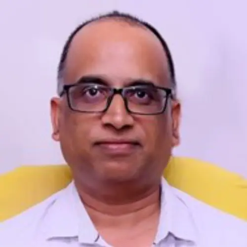

Home/Media libraryPreserved AIWC media record · 1009Prof. Kavi MaheshProf. Kavi Mahesh, preserved from the original AIWC website.Browse every image and video ↗Original asset address ↗
 AIWCAustralia India Water Centre
AIWCAustralia India Water Centre